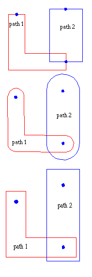

-
introduction
-
bachus nauer forms
-
KEY BNF
-
Records
-
record types overview
-
record types description
-
example file
-
KEYformat file example
-
KEYfile
The key format was designed to be an highly compatible format with GDSII.
It is completely ASCII oriented. It supports all primitives that the GDSII
format supports. Next to PATH, BOUNDARY, TEXT, BOX, SREF, AREF it supports
more primitives like CIRCLE and ARC, BOUNDARIE’S AND PATH’S containing
ARCSEGMENTS. The last is very important, since it offers a way to descibe
(closed)contours with line and arc segments at the same time. The elements
PATH, BOUNDARY, BOX, CIRCLE, ARC can have a WIDTH parameter added.
The number of Vertexes for BOUNDARY and PATH elements is unlimited.
The KEY format is a file format for transfering/archiving 2D graphical
design data. It contains a hiearchy of structures, each structure containing
elements (boundary/polygon, path/polyline, text, box, circle, arc, structure
references, structure array references).
The elements are situated on layers within a structure.
The file is composed of (two or one word) records seperated by
endofline or ";".
The order of the record needs to be according to the KEY BNF, because
of this strict organization it is easy to parse.
It is possible to convert KEYformat to GDSIIformat and back.
New primitives not available in the GDSII format, will be converted.
Note: records in GDSII that are badly documented or old fashioned and
therefore hardly used are not implemented.
The Bachus Nauer Form uses the following symbols:
| Symbol Name |
Symbol |
Meaning |
| Double Colon |
:: |
"Is composed of." |
| Square brackets |
[ ] |
An element which can occor zero or one time. |
| Braces |
{ } |
Choose one of the elements within the braces. |
| Braces with an asteriks |
{ }* |
The elements within the braces can occur zero or more times. |
| Braces with a plus |
{ }+ |
The elements within braces must occur one or more times. |
| Angle brackets |
< > |
These elements are further defined as a seperate entitie in the syntax
list. |
| Vertical bar |
| |
Or |
The following is the Bachus Naur Form of the KEY format, the words in capital
are the names of RECORDS
A record in a KEYfile is always one or two words. The first word
is the name of the record, the second if given, contains the information
for the record. Records are seperated by endofline or ";". Records starting
with "#", are seen as comments, and ignored. Lines ending with "\" continue
on the next line. Although the second word is also an ASCII string, the
interpretation of the data is defined for the recordname which is fixed.
Record Parser BNF
| <records> |
::= |
[<blanks>] { { <record> }* } |
| <record> |
::= |
[<blanks>] {<comment> | <word> <blanks> [<word>]
<blanks> <endrecord> }* |
| <endrecord> |
::= |
{';' | '\n' | '\0' } |
| <word> |
::= |
{ <quotedstring> | <bracedstring> | <multipartword> } |
| <quotedstring> |
::= |
('"') {CHAR | '\"' | '\\n' | aliasref | envref }* ('"') |
| <bracedstring> |
::= |
('{') {CHAR | '\{' | '\}' | '\\n'}* ('}') |
| <multipartword> |
::= |
{ <aliasref> | <envref> | {CHAR | '\\n'}* }* |
| <aliasref> |
::= |
('%') { <name> <blank> | ('{') <name> ('}') } |
| <envref> |
::= |
('$') { <name> <blank> | ('{') <name> ('}') } |
| <name> |
::= |
{ LETTER | DIGIT | UNDERSCORE | MINUS }* |
| <blanks> |
::= |
{ TAB | SPACE | '\\n'}* |
| <comment> |
::= |
# {CHAR}* ('\0') |
Examples of records
One word records:
Two word records:
-
LASTMOD {98-7-20 14:46:14};
-
STRNAME LAYOUT;
-
PRESENTATION 0,2,0;
-
Y -1666000.000;
-
STRING "BOUNDARY with width";
-
RADIUS 1.56e+06;
More records on one line:
-
BGNSTR; CREATION {98-7-20 14:46:14}; # creation time
-
X -1000.000; Y
0.000; X 163000.000; Y
0.000;
Although not used at the moment it is possible to do the following.
Using environment or alias variables (asume $B is set to BOUNDARY and
%C is set to CIRCLE and %T is set to DATA ):
-
$B; LAYER 0; %{T}TYPE 0;
-
%C; LAYER 0; %{T}TYPE 0;
The following table gives an overview of all the record that are used within
a GDSII file.
| KEYword |
Data Type |
description |
| HEADER |
Integer |
version number |
| BGNLIB |
Integer |
begin of library, last modification date and time |
| LIBNAME |
Integer |
name of library |
| UNITS |
No Data |
marks begin of units info |
| USERUNITS |
Real |
database units |
| PHYSUNITS |
Real |
user units |
| ENDLIB |
No Data |
end of library |
| LASTMOD |
specific |
last modification time |
| LASTACC |
specific |
last access time |
| BGNSTR |
NoData |
begin of structure |
| STRNAME |
ASCII string |
name of structure |
| CREATION |
specific |
creation time |
| ENDSTR |
No Data |
end of structure |
| BOUNDARY |
No Data |
begin of boundary element |
| PATH |
No Data |
begin of path element |
| CIRCLE |
No Data |
begin of CIRCLE |
| ARC |
No Data |
begin of ARC |
| SREF |
No Data |
begin of structure reference element |
| AREF |
No Data |
begin of array reference element |
| TEXT |
No Data |
begin of text element |
| LAYER |
Integer |
layer number of element |
| DATATYPE |
Integer |
datatype number of element |
| WIDTH |
Real |
width of element in db units |
| XY |
Integer |
starts list of xy coordinates in db units |
| X |
Real |
x coordinate of vertex |
| Y |
Real |
y coordinate of vertex |
| XM |
Real |
x of middle point on arc segment |
| YM |
Real |
y of middle point on arc segment |
| XO |
Real |
x centre point of arc segment |
| YO |
Real |
y centre point of arc segment |
| ENDEL |
No Data |
end of element |
| SNAME |
ASCII string |
name of structure reference |
| COLROW |
Integer |
number of colomns and rows in array reference |
| NODE |
No Data |
begin of node element |
| TEXTTYPE |
Integer |
texttype number |
| PRESENTATION |
Integer |
text presentation, font |
| STRING |
ASCII string |
character string for text element |
| STRANS |
Integer |
array reference, structure reference and text transform flags |
| MAG |
Real |
magnification factor for text and references |
| ANGLE |
Real |
rotation angle for text and references |
| PATHTYPE |
Integer |
type of PATH element end ( rounded, square) |
| ELFLAGS |
Integer |
template data |
| NODETYPE |
Integer |
node type number for NODE element |
| PROPERTY |
ASCII string |
property name |
| PROPTYPE |
Integer |
property datatype |
| PROPVALUE |
ASCII string |
property value |
| BOX |
No Data |
begin of box element |
| BOXTYPE |
Integer |
boxtype for box element |
| PLEX |
Integer |
plex number |
In this part all records in the KEYformat are described, for the format
of records see RECORD format
Contains integer data representing the KEY version number.
example: HEADER 5
Marks the beginning of a library.
example: BGNLIB
| LASTMOD |
modification data of libray or structure |
The second word contains the last modification time of a library or structure
(two digits each for year, month, day, hour, minute, and second).
example: LASTMOD {98-8-25 15:53:12}
| LASTACC |
last access data of library |
The second word contains the last access time of a library (two digits
each for year, month, day, hour, minute, and second).
example: LASTACC {98-8-25 15:53:12}
Contains a string which is the library name.
example: LIBNAME TEMPEGS.DB
Marks begin of units information.
example: UNITS
Contains one real number. The number is the size of a database unit in
user units. For example, if you create a library with the default units
(user unit = 1 micron and 1000 database units per user unit), the number
is .001. Typically, the USERUNITS is less than 1, since you use more
than 1 database unit per user unit. To calculate the size of a user unit
in meters, divide the PHYSUNITS by the USERUNITS.
example: USERUNITS 0.01
Contains one real number. The number is the size of a database unit in
meters. For example, if you create a library with the default units (user
unit = 1 micron and 1000 database units per user unit), the USERUNITS is
.001, and the PHYSUNITS number is 1E-9. Typically, the USERUNITS
is less than 1, since you use more than 1 database unit per user unit.
To calculate the size of a user unit in meters, divide the PHYSUNITS by
the USERUNITS.
example: PHYSUNITS 1e-08
Marks the end of a library.
example: ENDLIB
Marks the beginning of a structure.
example: BGNSTR
| CREATION |
creation data of structure |
The second word contains the creation time of a library (two digits each
for year, month, day, hour, minute, and second).
example: CREATION {98-7-20 14:46:14}
Contains a string which is the structure name. A structurename may be up
to 32 characters long. Legal structurename characters are:
-
A through Z
-
a through z
-
0 through 9
-
Underscore (_)
-
Question mark (?)
-
Dollar sign ($)
example: STRNAME cell4test
Marks the end of a structure.
example: ENDSTR
Marks the beginning of a boundary element.
example of complete boundary element:
BOUNDARY; LAYER 0; DATATYPE 0; WIDTH
50000;
XY 7;
X 1000000.000;
Y -2471660.000; X
1000000.000; Y -2650000.000;
X
0.000; Y -2650000.000; X
0.000; Y -1650000.000;
X 1000000.000;
Y -1650000.000; X
1000000.000; Y -2075880.000;
XM 1546200.000;
YM -2204200.000; XO
1241668.000; YO -2273770.000;
X 1000000.000;
Y -2471660.000;
ENDEL;
Marks the beginning of a path element.
example of complete PATH element:
PATH; LAYER 3; DATATYPE 0; WIDTH 100000;
XY 4;
X
891912.000; Y 2322024.000; X
966537.000; Y 1854278.000;
X 2599515.000;
Y 2311647.000; X
2626485.000; Y 2005353.000;
ENDEL;
Marks the beginning of an Sref (structure reference) element.
example of complete SREF element:
SREF;
SNAME AAP;
STRANS 0,0,0;
XY 1;
X -1112500.000;
Y -1267000.000;
ENDEL;
Marks the beginning of an Aref (array reference) element.
For coordinate information see XY record
example of complete AREF element:
AREF;
SNAME cell4test; STRANS 0,0,0; COLROW {7
, 3};
XY 3;
X
-5114000.000; Y -3006000.000; X
-3095600.000; Y -3006000.000;
X
-5114000.000; Y -1891800.000;
ENDEL;
Marks the beginning of a text element.
example complete TEXT element:
TEXT; LAYER 3;
TEXTTYPE 0; PRESENTATION 0,2,0; PATHTYPE 1; STRANS
0,0,0; MAG 1875;
XY 1;
X -2256500.000;
Y 1539500.000;
STRING "Whatever";
ENDEL;
Marks the beginning of a box element.
example complete BOX element:
BOX; LAYER 2; BOXTYPE 0;
XY 5;
X 1526500.000;
Y -1034500.000; X
2623500.000; Y -1034500.000;
X 2623500.000;
Y 1105500.000; X
1526500.000; Y 1105500.000;
X 1526500.000;
Y -1034500.000;
ENDEL;
Contains two bytes which specify boxtype. The value of the boxtype must
be in the range of 0 to 255.
Marks the beginning of a CIRCLE element.
example complete CIRCLE element:
CIRCLE; LAYER 0; DATATYPE 0;
XY 1;
X -3844000.714;
Y 18800.116;
RADIUS 1.56e+06;
ENDEL;
Gives the radius of the circle in a CIRCLE element.
example of CIRCLE:
Marks the beginning of a ARC element.
example complete an ARC element:
ARC; LAYER 0; DATATYPE 0; WIDTH 100000;
XY 2;
X 1500000.000;
Y -1712940.000; XM
1773100.000; YM -1777100.000;
XO 1620834.000;
YO -1811885.000; X
1500000.000; Y -1910830.000;
ENDEL;
Contains integer which specifies the layer.
example: LAYER 123
Contains integer which specifies the datatype. The value of the datatype
must be in the range of 0 to 255.
example: DATATYPE 123
Contains real which specifies the width of a path or text lines in database
units. If omitted, zero is assumed.
example: WIDTH 100000.000
Marks begin of vertex list for elements like PATH and BOUNDARY etc. The
second word specifies the number of line and arcsegments following,
until the ENDEL record.
For the elements needing the XY record the definition for the X Y is
as follows.
-
Each X or Y coordinate is a real. Path elements may have a minimum of 2
vertexes. Boundary and border elements may have a minimum of 4 vertexes.
The first and last coordinates of a boundary must be the same.
The PATH and BOUNDARY element may contain arcsegments also. If the
record following an Y record is XM,
it means that the distance to the next X and Y record is defined as
an arcsegment.
example of arcsegment:
X 1000000.000; Y
-2075880.000; #last X and Y record
parsed
XM 1546200.000; YM
-2204200.000; #start of arcsegment, defines middle point on arcsegment
XO 1241668.000; YO
-2273770.000; #defines centre point on arc segment
X 1000000.000; Y
-2471660.000; #defines endpoint
of arc segment.
-
An ARC element has only one definition of an arc
segment after the XY record
example of ARC:
-
A CIRCLE element has only X and one Y record XY record
example of CIRCLE:
-
A text, or Sref element may have only one coordinate.
example of SREF:
example of TEXT:
-
An Aref has exactly three coordinates. In an Aref, the first coordinate
is the array reference point (origin point). The other two coordinates
are already rotated, reflected as specified in the STRANS record (if specified).
So in order to calculate the intercolomn and interrow spacing, the coordinates
must be mapped back to their original position, or the vector lenght (x1,y1->
x3,y3) must be divided by the number of row etc. . The second coordinate
locates a position which is displaced from the reference point by the inter-column
spacing times the number of columns. The third coordinate locates a position
which is displaced from the reference point by the inter-row spacing times
the number of rows. For an example of an array lattice see the next picture.
 Aref rotated
-30 degrees.
Aref rotated
-30 degrees.
example of AREF:
-
A node may have from one to 50 coordinates.
-
A box must have five coordinates, with the first and last coordinates being
the same.
example of BOX:
X coordinate of vertex. For arcsegments this is the X coordinate of the
first point starting the arcsegment.
example: X -2650000.000
example of XY:
Y coordinate of vertex. For arcsegments this is the Y coordinate of the
first point starting the arcsegment.
example: Y -2650000.000
example of XY:
example: XM -2650000.000
example of XY:
example: YM -2650000.000
example of XY:
example: XO -2650000.000
example of XY:
example: YO -2650000.000
example of XY:
Marks the end of an element.
example: ENDEL
example of XY:
Contains the name of a referenced structure.See also STRNAME.
example: SREF
example: AREF
The second word contains two integers. The first integer is the number
of columns in the array. The second integer is the number of rows.
See also AREF.
example: AREF
Present Marks the beginning of a node
Contains two bytes representing texttype. The value of the texttype must
be in the range 0 to 255.
| PRESENTATION |
Integer flags |
The second word contains 3 integer flags for text presentation.
The first integer specifies the font (0 means font 0, 1 rneans
font 1, 2 font 2, and 3 font 3).
The second integer specifies the vertical justification (0 means top,
1 means middle, and 2 means bottom).
The third integer specifies the horizontal justification (0 means left,
1 means center, and 2 means right).
If this record is omitted, then top-left justification and font 0 are
assumed.
example:
PRESENTATION 0,2,0 ;
# font 0 vertical 2 horizontal 0
Contains a character string for text presentation.
example:
STRING "can be very long"
The second word contains 3 integer flags for Sref, Aref, and text transforrnation.
Integer 1 specifies reflection. If set, the element is reflected about
the X-axis before angular rotation. For an Aref, the entire array is reflected,
with the individual array members rigidly attached. Integer 2 flags absolute
magnification. Integer 3 flags absolute angle. If this record is omitted,
the element is assumed to have no reflection, non-absolute magnification,
and non-absolute angle.
example:
STRANS 0,0,0
Contains a real number, which is the magnification factor. If this
record is omitted, a magnification factor of one is assumed.
example:
MAG 1875.001
Contains a real number, which is the angular rotation factor. The angle
of rotation is measured in degrees and in the counterclockwise direction.
For an Aref, the ANGLE rotates the entire array
(with the individual array members rigidly attached) about the array reference
point. For COLROW record information, the angle
of rotation is already inlcuded in the coordinates. If this record is omitted,
an angle of zero degrees is assumed.
example:
ANGLE -30.123
This record contains a value that describes the type of path endpoints.
The value is
-
0 for square-ended paths that endflush with their endpoints
-
1 for round-ended paths
-
2 for square-ended paths that extend a half-width beyond their endpoints
If not specified, a Path-type of 0 is assumed.
example:
PATHTYPE 1
The following picture shows the pathtypes
|  |
Pathtype 0 produces a square-ended path, ending flush with
thedigitized endpoints. This is the de-fault pathtype if none is specified |
| Pathtype 1 produces a round-ended path. The two ends aresemicircular
with center at thedigitized endpoints. |
| Pathtype 2 produces a square-ended path. The ends of the pathextend
beyond the digitized end-points by one-half the path width. |
The second word contains 1 integer. Bit 1 of the integer flags Template
data. Bit 2 specifies External data(also referred to as Exterior data).
All other bits are currently unused and must be cleared to 0. If this record
isomitted, all bits are assumed to be 0.
Just to be compatible with GDSII, no idea what it means.
example:
ELFLAGS 1
Contains two bytes which specify nodetype. The value of the nodetype must
be in the range of 0 to 255.
example:
NODETYPE 1
A string which gives the name of a property that is attached to the previous
element.
example:
PROPERTY myname
A string which gives the type of a property that is attached to the previous
element.
example:
PROPTYPE mytype
A string which gives the value of a property that is attached to the previous
element.
example:
PROPVALUE myvalue
A unique positive number which is common to all elementsof the plex to
which this element belongs. The head of the plex is flagged by setting
the seventh bit; therefore, plexnumbers should be small enough to occupy
only the right-most 24 bits. If this record is not present, the element
is not a plex member.
Is ignored to be compatible with GDSII, no idea what it means.